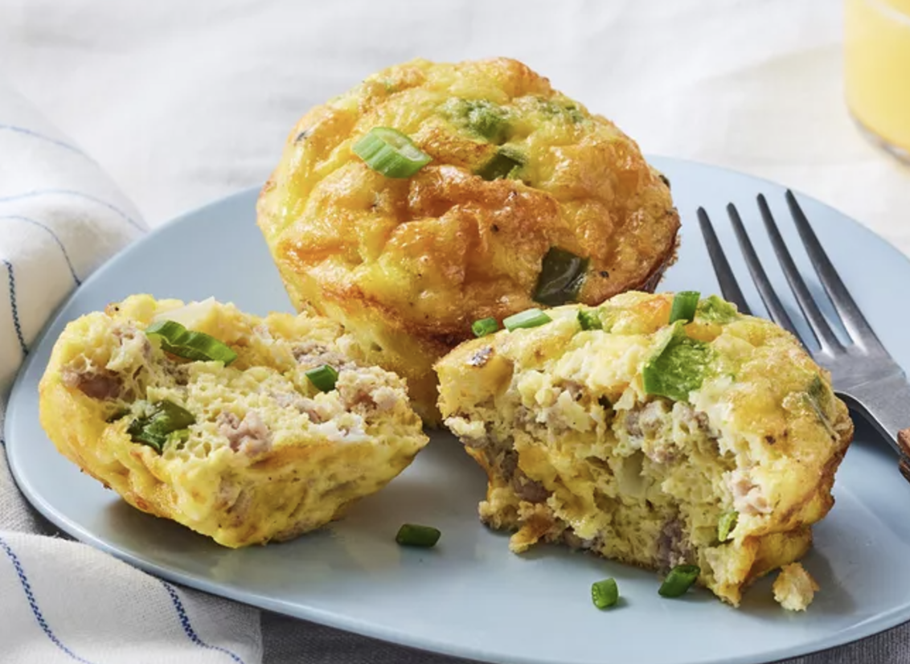

Muffin

Description: Egg muffin. Why would you choose to eat these, or even make these?? Blueberry muffins are far superior.
Ingredients
- Sausage
- Eggs
- Vegetables
- Spices
- Cheese
Steps
- Cook the sausage, then drain off the grease.
- Beat the eggs in a bowl, then mix in the sausage and the remaining ingredients.
- Pour the mixture evenly into muffin cups and bake in the preheated oven.